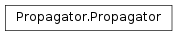

The WaveBlocks Project
@author: R. Bourquin @copyright: Copyright (C) 2010, 2011, 2012 R. Bourquin @license: Modified BSD License

Propagators can numerically simulate the time evolution of quantum states as described by the time-dependent Schroedinger equation.
| Returns: | The number of components of $Ket{Psi}$. |
|---|
@raise NotImplementedError: This is an abstract base class.
| Returns: | The embedded I{MatrixPotential} instance. |
|---|
@raise NotImplementedError: This is an abstract base class.
Given the wavefunction $Psi$ at time $t$, calculate the new $Psi$ at time $t + au$. We do exactly one timestep $ au$ here. @raise NotImplementedError: This is an abstract base class.